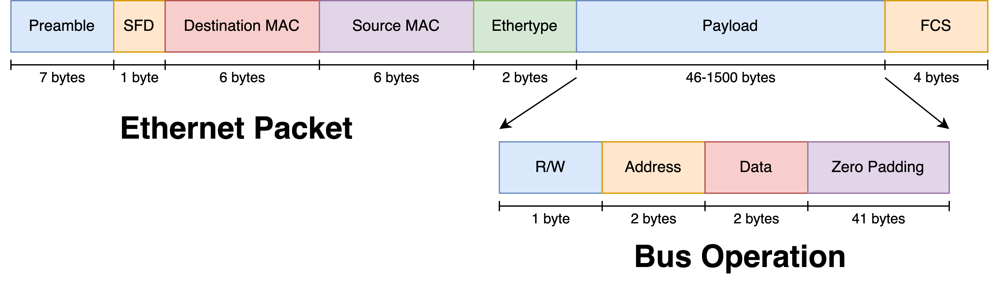

Ethernet Interface
This section is under construction!
The Ethernet interface is just about to get refactored to implement a few performance gains, so what's here represents the Ethernet interface circa April 2023. Hang tight for new stuff!
Overview
For situations where the onboard UART is not available, Manta provides a 100Mbps Ethernet link for communicating between the host machine and target FPGA. This link implements a L2 MAC on the FPGA, designed to be directly connected to a host machine on a dedicated network adapter. The MAC is controlled by a bridge interface, which performs the exact same function as it does on the UART interface. Incoming packets are parsed into bus transactions, placed on the bus, and any response data is encapsulated into another packet sent to the host.
This is done by interacting with an Ethernet PHY, an onboard transceiver IC that converts between the FPGA's logic-level signaling and the voltages on the cable's twisted pairs. The communication between the Ethernet PHY and the FPGA is done over an interface that's dependent on the speed of the PHY. The 10/100 Mbps interface used on the Nexys A7-100T uses the RMII as defined in IEEE 802.3u. RMII is the second-oldest member in the Media Independent Interface family, with newer revisions of 802.3 supporting faster interfaces.
Manta's bus clock must be equivalent to the PHY's reference clock if Ethernet is to be used - in the case of the 100Mbps RMII PHY on the Nexys A7 used in 6.205, this is 50MHz. This doesn't pose a problem for user logic, which is connected through Manta's cores that perform CDC internally. It does mean that a reference clock for the PHY has to be synthesized outside of Manta itself, and the means by which this is done varies by FPGA vendor and toolchain.
This MAC allows for the usage of packets with the structure shown below. The bus transaction being communicated is placed at the beginning of the packet's payload field, which IEEE 802.3 allows to vary in length from 46 to 1500 bytes. The 46-byte lower limit requires 41 bytes of zero padding to be added to the five bytes used to specify a bus transaction, and only one bus transactions is specified in each Ethernet frame. This abundance of unused space results in all packets being the same length, whether the packet contains a read request, write request, or read response. Packets containing write requests elicit no response from the FPGA, just as write requests delivered over UART produce no response.

These packets are addressed directly to the host's MAC address, which is obtained during code autogeneration. These packets also use a fixed Ethertype of 0x88B5, which is specially reserved for "public use and for prototype and vendor-specific protocol development" in IEEE 802.1. This was done to create an Ethernet II frame instead of a legacy 802.3 frame, without having to implement a higher level protocol like TCP or UDP to safely use a fixed Ethertype. This allows the MAC to use modern Ethernet II frames safely, but save FPGA resources.